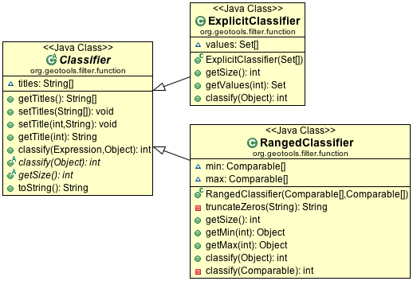

FeatureCollection¶
A FeatureCollection is a collection of Features similar to a JDBC ResultSet.
Overview¶
FeatureCollection is similar to a java Collection<Feature>. The crucial difference is the requirement to close each FeatureIterator after use in order to prevent memory and connection leaks.
In addition to the above key requirement, FeatureCollection provides methods to review the FeatureType of the members, ask for the bounds (rather than just the size) and so on.
With this in mind:
FeatureCollection is method compatible with java.util.Collection where possible
Iterator need to be closed.
As provided:
SimpleFeatureIterator iterator = featureCollection.features(); try { while( iterator.hasNext() ){ SimpleFeature feature = iterator.next(); // process feature } } finally { iterator.close(); }
All the content is of the same FeatureType as indicated by indicated by:
FeatureType type = featureCollection.getSchema();
We cannot support the Java ‘for each’ loop syntax; as we need to be sure to close our iterator().
We can support the Java try-with-resource syntax:
try (SimpleFeatureIterator iterator = featureCollection.features()){ while( iterator.hasNext() ){ SimpleFeature feature = iterator.next(); ... } }
FeatureCollection
The interface provides the following methods:
public interface FeatureCollection<T extends FeatureType, F extends Feature> {
// feature access - close when done!
FeatureIterator<F> features()
// feature access with out the loop
void accepts(FeatureVisitor, ProgressListener);
T getSchema();
String getID();
// sub query
FeatureCollection<T,F> subCollection(Filter);
FeatureCollection<T,F> sort(SortBy);
// summary information
ReferencedEnvelope getBounds()
boolean isEmpty()
int size()
boolean contains(Object)
boolean containsAll(Collection<?>)
// convert to array
Object[] toArray()
<O> O[] toArray(O[])
}
Streaming Results
A FeatureCollection is not an in memory snapshot of your data (as you might expect), we work with the assumption that GIS data is larger than you can fit into memory.
Most implementations of FeatureCollection provide a memory footprint close to zero and each time you access the data will be loaded as you use it.
Please note that you should not treat a FeatureCollection as a normal in memory Java collection - these are heavyweight objects and we must ask you to close any iterators you open.:
FeatureIterator<SimpleFeature> iterator = featureCollection.features();
try {
while( iterator.hasNext() ){
SimpleFeature feature = iterator.next();
...
}
}
finally {
iterator.close();
}
We ask that you treat interaction with FeatureCollection as a ResultSet carefully closing each object when you are done with it.
In Java 7 this becomes easier with the try-with-resoruce syntax:
try (FeatureIterator<SimpleFeature> iterator = featureCollection.features()){
while( iterator.hasNext() ){
SimpleFeature feature = iterator.next();
...
}
}
SimpleFeatureCollection¶
Because Java Generics (ie <T> and <F>) are a little hard to read we introduced SimpleFeatureCollection to cover the common case:
public interface SimpleFeatureCollection extends FeatureCollection<SimpleFeatureType,SimpleFeature> {
// feature access - close when done!
SimpleFeatureIterator features()
// feature access with out the loop
void accepts(FeatureVisitor, ProgressListener);
SimpleFeatureType getSchema()
String getID()
// sub query
SimpleFeatureCollection subCollection(Filter)
SimpleFeatureCollection sort(SortBy)
// summary information
ReferencedEnvelope getBounds()
boolean isEmpty()
int size()
boolean contains(Object)
boolean containsAll(Collection<?>)
// convert to array
Object[] toArray()
<O> O[] toArray(O[])
}
This SimpleFeatureCollection interface is just syntactic sugar to avoid typing in FeatureCollection<SimpleFeatureType,SimpleFeature> all the time. If you need to safely convert you can use the DataUtilities.simple method:
SimpleFeatureCollection simpleCollection = DataUtilities.simple(collection);
Creating a FeatureCollection is usually done for you as a result of a query, although we do have a number of implementations you can work with directly.
From DataStore¶
The most common thing to do is grab a FeatureCollection from a file or service.:
File file = new File("example.shp");
Map map = new HashMap();
map.put( "url", file.toURL() );
DataStore dataStore = DataStoreFinder.getDataStore( Map map );
SimpleFeatureSource featureSource = dataStore.getFeatureSource( typeName );
SimpleFeatureCollection collection = featureSource.getFeatures();
Please be aware that this is not a copy - the SimpleFeatureCollection above should be considered to be the same thing as the “example.shp”. Changes made to the collection will be written out to the shapefile.
Using a Query to order your Attributes
Occasionally you will want to specify the exact order in which your attributes are presented to you, or even leave some attributes out altogether.
Query query = new Query( typeName, filter); query.setPropertyNames( “geom”, “name” ); SimpleFeatureCollection sorted = source.getFeatures(query);
Please note that the resulting SimpleFeatureCollection.getSchema() will not match SimpleFeatureSource.getFeatureType(), since the attributes will now be limited to (and in the order) specified.
Using a Query to Sort a SimpleFeatureCollection
Sorting is available:
Query query = new Query( typeName, filter); SortBy sort = filterFactory.sort( sortField, SortOrder.DESCENDING); query.setSortBy( new SortBy[] { sort } ); SimpleFeatureCollection sorted = source.getFeatures(query);Load into Memory
If you would like to work with an in memory copy, you will need to explicitly take the following step:
SimpleFeatureCollection collection = myFeatureSource.getFeatures(); SimpleFeatureCollection memory = DataUtilities.collection( collection );
However as mentioned above this will be using the default TreeSet based feature collection implementation and will not be fast. How not fast? Well your shapefile access on disk may be faster (since it has a spatial index).
DefaultFeatureCollection¶
GeoTools provides a default implementation of feature collection that can be used to gather up your features in memory; prior to writing them out to a DataStore.
This default implementation of SimpleFeatureCollection uses a TreeMap sorted by FeatureId; so it does not offer very fast performance.
To create a new DefaultFeatureCollection:
DefaultFeatureCollection featureCollection = new DefaultFeatureCollection();
You can also create your collection with an “id”, which will can be used as a handle to tell your collections apart.:
DefaultFeatureCollection featureCollection = new DefaultFeatureCollection("internal");
You can create new features and add them to this FeatureCollection as needed:
SimpleFeatureType TYPE = DataUtilities.createType("location","geom:Point,name:String");
DefaultFeatureCollection featureCollection = new DefaultFeatureCollection("internal",TYPE);
WKTReader2 wkt = new WKTReader2();
featureCollection.add( SimpleFeatureBuilder.build( TYPE, new Object[]{ wkt.read("POINT(1,2)"), "name1"}, null) );
featureCollection.add( SimpleFeatureBuilder.build( TYPE, new Object[]{ wkt.read("POINT(4,4)"), "name2"}, null) );
To FeatureSource¶
You often need to “wrap” up your FeatureCollection as a feature source in order to make effective use of it (SimpleFeatureSource supports the ability to query the contents, and can be used in a MapLayer for rendering).:
SimpleFeatureSource source = DataUtilities.source( collection );
Existing Content¶
The DataUtilities class has methods to create a feature collection from a range of sources:
- DataUtilities.collection(FeatureCollection<SimpleFeatureType, SimpleFeature>)
- DataUtilities.collection(FeatureReader<SimpleFeatureType, SimpleFeature>)
- DataUtilities.collection(List<SimpleFeature>)
- DataUtilities.collection(SimpleFeature)
- DataUtilities.collection(SimpleFeature[])
- DataUtilities.collection(SimpleFeatureIterator)
For more information see DataUtilities.
Performance Options¶
For GeoTools 2.7 we are making available a couple new implementations of FeatureCollection.
These implementations of SimpleFeatureCollection will each offer different performance characteristics:
TreeSetFeatureCollection: the traditional TreeSet implementation used by default.
Note this does not perform well with spatial queries as the contents are not indexed. However finding a feature by “id” can be performed quickly.
It is designed to closely mirror the experience of working with content on disk (even down to duplicating the content it gives you in order to prevent any trouble if another thread makes a modification).
DataUtilities.source( featureCollection ) will wrap TreeSetFeatureCollection in a CollectionFeatureSource.
ListFeatureCollection: uses a list to hold contents; please be sure not to have more then one feature with the same id.
The benefit here is being able to wrap a List you already have up as a FeatureCollection without copying the contents over one at a time.
The result does not perform well as the contents are not indexed in anyway (either by a spatial index, or by feature id).
DataUtilities.source( featureCollection ) will wrap ListFeatureCollection in a CollectionFeatureSource.
Here is an example using the ListFeatureCollection:
SimpleFeatureType TYPE = DataUtilities.createType("location","geom:Point,name:String"); WKTReader2 wkt = new WKTReader2(); ArrayList<SimpleFeature> list = new ArrayList<SimpleFeature>(); list.add( SimpleFeatureBuilder.build( TYPE, new Object[]{ wkt.read("POINT(1,2)"), "name1"}, null) ); list.add( SimpleFeatureBuilder.build( TYPE, new Object[]{ wkt.read("POINT(4,4)"), "name2"}, null) ); SimpleFeatureCollection collection = new ListFeatureCollection(TYPE,list); // O(N) access SimpleFeatureSource source = DataUtilities.source( collection ); SimpleFeatureCollection features = source.getFeatures( filter );Please keep in mind that the original list is being used by the ListFeatureCollection; so the contents will not be copied making this a lean solution for getting your features bundled up. The flip side is that you should use the FeatureCollection methods to modify the contents after creation (so it can update the bounds).
SpatialIndexFeatureCollection: uses a spatial index to hold on to contents for fast visual display in a MapLayer; you cannot add more content to this feature collection once it is used
DataUtilities.source( featureCollection ) will wrap SpatialIndexFeatureCollection in a SpatialIndexFeatureSource that is able to take advantage of the spatial index.
Here is an example using the SpatialIndexFeatureCollection:
final SimpleFeatureType TYPE = DataUtilities.createType("location","geom:Point,name:String"); WKTReader2 wkt = new WKTReader2(); SimpleFeatureCollection collection = new SpatialIndexFeatureCollection(); collection.add( SimpleFeatureBuilder.build( TYPE, new Object[]{ wkt.read("POINT(1,2)"), "name1"} )); collection.add( SimpleFeatureBuilder.build( TYPE, new Object[]{ wkt.read("POINT(4,4)"), "name1"} )); // Fast spatial Access SimpleFeatureSource source = DataUtilities.source( collection ); SimpleFeatureCollection features = source.getFeatures( filter );The SpatialIndexFeatureCollection is fast, but tricky to use. It will store the features itself, using a JTS STRtree spatial index. This means the contents of the feature collection cannot be modified after the index set up, and the index is set up the first time you query the collection (asking for size, bounds, or pretty much anything other then add ).
To get the full benefit you need to use SimpleFeatureSource as shown above; it will make use of the spatial index when performing a filter.
Contents¶
A SimpleFeatureCollection method compatible with Java Collection<Feature>; this means that an Iterator is available for you to to access the contents.
However you will need to close your iterator after use; so that any resources (such as database connections) are returned.
Direct¶
The following lists several ways of reading data so you can choose the approach that suites you your needs. You may find the use of Iterator comfortable (but a bit troubling with try/catch code needed to close the iterator). FeatureVisitor* as it involves the fewest lines of code (but it “gobbles” all the error messages). On the other extreme FeatureReader makes all the error messages visible requiring a lot of try/catch code. Finally we have FeatureIterator when working on Java 1.4 code before generics were available.
Using FeatureIterator
Use of iterator is straight forward; with the addition of a try/finally statement to ensure the iterator is closed after use.:
CoordinateReferenceSystem crs = features.getMemberType().getCRS(); BoundingBox bounds = new ReferencedEnvelope( crs ); FeatureIterator<SimpleFeature> iterator = features.iterator(); try { while( iterator.hasNext()){ SimpleFeature feature = iterator.next(); bounds.include( feature.getBounds() ); } } finally{ iterator.close(); }Invalid Data
Currently GeoTools follows a “fail first” policy; that is if the data does not exactly meet the requirements of the SimpleFeatureType a RuntimeException will be thrown.
However often you may in want to just “skip” the troubled Feature and carry on; very few dataset’s are perfect.:
SimpleFeatureCollection featureCollection = featureSource.getFeatures(filter); FeatureIterator iterator = null; int count; int problems; try { for( iterator = features.features(); iterator.hasNext(); count++){ try { SimpleFeature feature = (SimpleFeature) iterator.next(); ... } catch( RuntimeException dataProblem ){ problems++; lastProblem = dataProblem; } } } finally { if( iterator != null ) iterator.close(); } if( problems == 0 ){ System.out.println("Was able to read "+count+" features."); else { System.out.println("Read "+count + "features, with "+problems+" failures"); }Individual DataStores may be able to work with your data as it exists (invalid or not).
Use of FeatureVisitor
FeatureVisitor lets you traverse a FeatureCollection with less try/catch/finally boilerplate code.:
CoordinateReferenceSystem crs = features.getMemberType().getCRS(); final BoundingBox bounds = new ReferencedEnvelope( crs ); features.accepts( new AbstractFeatureVisitor(){ public void visit( Feature feature ) { bounds.include( feature.getBounds() ); } }, new NullProgressListener() );You do not have to worry about exceptions, open or closing iterators and as an added bonus this may even be faster (depending on the number of cores you have available).
Comparison with SimpleFeatureReader
SimpleFeatureReader is a “low level” version of Iterator that is willing to throw IOExceptions, it is a little bit more difficult to use but you may find the extra level of detail worth it.:
SimpleFeatureReader reader = null; try { reader = dataStore.getFeatureReader( typeName, filter, Transaction.AUTO_COMMIT ); while( reader.hasNext() ){ try { SimpleFeature feature = reader.next(); } catch( IllegalArgumentException badData ){ // skipping this feature since it has invalid data } catch( IOException unexpected ){ unexpected.printStackTrace(); break; // after an IOException the reader is "broken" } } } catch( IOException couldNotConnect){ couldNotConnect.printStackTrace(); } finally { if( reader != null ) reader.close(); }
Aggregate Functions¶
One step up from direct access is the use of an “aggregate” function that works on the entire FeatureCollection to build you a summary.
Traditionally functions that work on a collection are called “aggregate functions”. In the world of databases and SQL these functions include “min”, “max”, “average” and “count”. GeoTools supports these basic concepts, and a few additions such as bounding box or unique values.
Internally these functions are implemented as a FeatureVisitor; and are often optimised into raw SQL on supporting DataStores.
Here are the aggregate functions that ship with GeoTools at the time of writing. For the authoritative list check javadocs.
| Function | Visitor | Notes |
|---|---|---|
| Collection_Average | AverageVisitor | |
| Collection_Bounds | BoundsVisitor | Should be the same as getBounds() |
| Collection_Count | CountVisitor | Should be the same as size() |
| Collection_Max | MaxVisitor | With respect to comparable sort order |
| Collection_Median | MedianVisitor | With respect to comparable sort order |
| Collection_Min | MinVisitor | With respect to comparable sort order |
| Collection_Nearest | NearestVisitor | Nearest value to the provided one |
| Collection_Sum | SumVisitor | Restricted to Numeric content |
| Collection_Unique | UniqueVisitor | Set<Object> of unique values |
Sum of a FeatureCollection
Here is an example of using Collection_Sum on a FeatureCollection:
FilterFactory2 ff = CommonFactoryFinder.getFilterFactory2(); Function sum = ff.function("Collection_Sum", ff.property("age")); Object value = sum.evaluate( featureCollection ); assertEquals( 41, value );Max of a FeatureCollection
Here is an example of using Collection_Max on a FeatureCollection:
FilterFactory2 ff = CommonFactoryFinder.getFilterFactory2(); Function sum = ff.function("Collection_Max", ff.property("age")); Object value = sum.evaluate( featureCollection ); assertEquals( 41, value );As an alternative you could directly use MaxVisitor:
Expression = ff.property("age"); MaxVisitor maxVisitor = new MaxVisitor(expression); collection.accepts(maxVisitor, null); CalcResult result = maxVisitor.getResult(); Object max = result.getValue();MaxVisitor is pretty good about handling numeric and string types (basically anything that is comparable should work).
CalcResult is used to hold the value until you are interested in it; you can run the same visitor across several collections and look at the maximum for all of them.
Classifier Functions¶
Another set of aggregate functions are aimed at splitting your FeatureCollection up into useful groups. These functions produce a Classifier for your FeatureCollection, this concept is similar to a histogram.
These classifiers are used:
- With the function “classifier” to sort features into groups
- With gt-brewer to produce attractive styles for visualisation of your data.
Here are some examples of defining and working with classifiers:
Create Classifier
You can produce a Classifier for your FeatureCollection as follows:
FilterFactory2 ff = CommonFactoryFinder.getFilterFactory2(); Function classify = ff.function("Quantile", ff.property("name"), ff.literal(2)); Classifier groups = (Classifier) classify.evaluate(collection);
The following classifier functions are available.
- EqualInterval - classifier where each group represents the same sized range
- Jenks - generate the Jenks’ Natural Breaks classification
- Quantile - classifier with an even number of items in each group
- StandardDeviation - generated using the standard deviation method
- UniqueInterval - variation of EqualInterval that takes into account unique values
These functions produce the Java object Classifier as an output.
Customising your Classifier
You can think of the Classifier as a series of groups or bins into which you will sort Features.
Each partition has a title which you can name as you please.:
groups.setTitle(0, "Group A"); groups.setTitle(1, "Group B");
Using Your Classifier to group Features
You can then use this Classifier to sort features into the appropriate group:
// groups is a classifier with "Group A" and "Group B" Function sort = ff.function("classify", ff.property("name"), ff.literal(groups)); int slot = (Integer) sort.evaluate(feature); System.out.println(groups.getTitle(slot)); // ie. "Group A"
You can think of a Classifier as a filter function similar to a Java switch statement.
Join¶
GeoTools does not have any native ability to “Join” FeatureCollections; even though this is a very common request.
References:
gt-validation additional examples
:docL`filter` example using filters
Join FeatureCollection
You can go through one collection, and use each feature as a starting point for making a query resulting in a “Join”.
In the following example we have:
- outer: while loop for each polygon
- inner: FeatureVisitor looping through each point
Thanks to Aaron Parks for sending us this example of using the bounding box of a polygon to quickly isolate interesting features; which can then be checked one by one for “intersects” (ie the features touch or overlap our polygon).
void polygonInteraction() { SimpleFeatureCollection polygonCollection = null; SimpleFeatureCollection fcResult = null; final DefaultFeatureCollection found = new DefaultFeatureCollection(); FilterFactory2 ff = CommonFactoryFinder.getFilterFactory2(); SimpleFeature feature = null; Filter polyCheck = null; Filter andFil = null; Filter boundsCheck = null; String qryStr = null; SimpleFeatureIterator it = polygonCollection.features(); try { while (it.hasNext()) { feature = it.next(); BoundingBox bounds = feature.getBounds(); boundsCheck = ff.bbox(ff.property("the_geom"), bounds); Geometry geom = (Geometry) feature.getDefaultGeometry(); polyCheck = ff.intersects(ff.property("the_geom"), ff.literal(geom)); andFil = ff.and(boundsCheck, polyCheck); try { fcResult = featureSource.getFeatures(andFil); // go through results and copy out the found features fcResult.accepts(new FeatureVisitor() { public void visit(Feature feature) { found.add((SimpleFeature) feature); } }, null); } catch (IOException e1) { System.out.println("Unable to run filter for " + feature.getID() + ":" + e1); continue; } } } finally { it.close(); } }
Joining two Shapefiles
The following example is adapted from some work Gabriella Turk posted to the geotools-user email list.
Download:
Here is the interesting bit from the above file:
private static void joinExample(SimpleFeatureSource shapes, SimpleFeatureSource shapes2) throws Exception { SimpleFeatureType schema = shapes.getSchema(); String typeName = schema.getTypeName(); String geomName = schema.getGeometryDescriptor().getLocalName(); SimpleFeatureType schema2 = shapes2.getSchema(); String typeName2 = schema2.getTypeName(); String geomName2 = schema2.getGeometryDescriptor().getLocalName(); FilterFactory2 ff = CommonFactoryFinder.getFilterFactory2(); Query outerGeometry = new Query(typeName, Filter.INCLUDE, new String[] { geomName }); SimpleFeatureCollection outerFeatures = shapes.getFeatures(outerGeometry); SimpleFeatureIterator iterator = outerFeatures.features(); int max = 0; try { while (iterator.hasNext()) { SimpleFeature feature = iterator.next(); try { Geometry geometry = (Geometry) feature.getDefaultGeometry(); if (!geometry.isValid()) { // skip bad data continue; } Filter innerFilter = ff.intersects(ff.property(geomName2), ff.literal(geometry)); Query innerQuery = new Query(typeName2, innerFilter, Query.NO_NAMES); SimpleFeatureCollection join = shapes2.getFeatures(innerQuery); int size = join.size(); max = Math.max(max, size); } catch (Exception skipBadData) { } } } finally { iterator.close(); } System.out.println("At most " + max + " " + typeName2 + " features in a single " + typeName + " feature"); }
When run on the uDig sample dataset available here:
You can run an intersection test between pubs and municipaliy:
Welcome to GeoTools:2.5.SNAPSHOT At most 88 bc_pubs features in a single bc_municipality feature
Here are a couple other examples for innerFilter to think about:
- ff.intersects( ff.property(geomName2), ff.literal( geometry )); // 88 pubs
- ff.dwithin(ff.property(geomName2), ff.literal( geometry ),1.0,”km”); // 60 pubs
- ff.not( ff.disjoint(ff.property(geomName2), ff.literal( geometry )) ); // 135 pubs!
- ff.beyond(ff.property(geomName2), ff.literal( geometry ),1.0,”km”); // 437 pubs